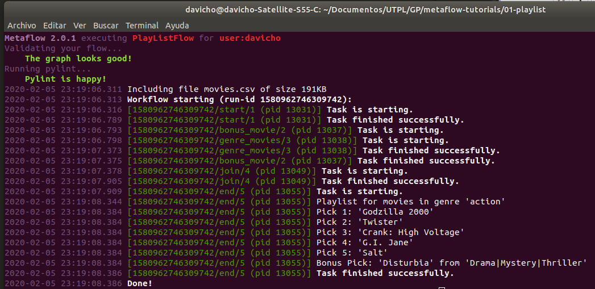

from metaflow import FlowSpec, step, IncludeFile, Parameter
Se procede a importar los modulos a utilizar desde Metaflow
def script_path(filename):
import os
current_folder = globals()['_dh'][0]
filepath = os.path.join(current_folder,'movies.csv')
return os.path.join(filepath, filename)
Se implementa la funcion os.path.join, conveniente para obtener la ruta del directorio de una manera mas facil. Esto permite utilizar el tutorial desde cualquier directorio
class PlayListFlow(FlowSpec):
movie_data = IncludeFile("movie_data",
help="The path to a movie metadata file.",
default=script_path('movies.csv'))
De manera similar a los Parametros, se puede definir un archivo de datos para incluirlo como entrada. Metaflow versiona el archivo y lo hara accesible a todos los pasos directamente a traves del objeto self
genre = Parameter('genre', #Nombre del parametro
help="Filter movies for a particular genre.", #Descripcion
default='action') #Valor por defecto
recommendations = Parameter('recommendations',
help="The number of movies to recommend in "
"the playlist.",
default=5)#El numero de peliculas que se mostraran al final
Los parametros se definen asignandolos a una variable global. En estos se detalla el nombre del parametro, una descripcion bajo la sintaxis help="...", ademas del valor por defecto, el cual puede ser el tipo de variable(int, String) o un dato en especifico(action).
Cada "step" esta antecedido por el decorador de Python @
@step
def start(self):
# Para este ejemplo solo se necesita de los titulos y el genero.
columns = ['movie_title', 'genres'] #Se crea la lista
# Crear un diccionario de las listas
self.dataframe = dict((column, list()) \
for column in columns)
# Analizar el CSV
lines = self.movie_data.split('\n') #Condicion para crear lineas separadas por cada salto de linea del CSV
header = lines[0].split(',') #Separar por cada coma. informacion de los titulos
idx = {column: header.index(column) for column in columns}
# Llenar el dataframe con cada linea seleccionada anteriormente.
for line in lines[1:]: #No tomar en cuenta la primera fila
if not line: #Si es que esta vacio
continue
fields = line.rsplit(',',4)
for column in columns:
self.dataframe[column].append(fields[idx[column]])
# Ejecutar en paralelo los metodos bonus_movie y genre_movies
self.next(self.bonus_movie, self.genre_movies)
En step start se comienza por analizar el CSV y a este extraer la informacion necesaria y almacenarla en un diccionario de Python.
En el metodo self.next se ejecutan pasos paralelos a travez de ramas. El beneficio de esto es mejorar el rendimiento de ejecucion. Metaflow puede ejecutar su codigo en paralelo aprovechando los distintos nucleos que posee el procesador del computador. Se permite cualquier cantidad de pasos paralelos.
@step
def bonus_movie(self):
from random import choice #Funcion del modulo aleatorio de Python
# Seleccionar todas las peliculas que no pertenecen al genero proporcionado anteriormente (action)
movies = [(movie, genres) \
for movie, genres \
in zip(self.dataframe['movie_title'],
self.dataframe['genres']) \
if self.genre.lower() not in genres.lower()]
# Escoger una aleatoriamente.
self.bonus = choice(movies)
self.next(self.join)#Apunta al siguiente paso
El step bonus_movie selecciona aleatoriamente una pelicula que sea de un genero diferente para añadirla al resultado final.
Luego de esto apunta al siguiente paso que es el step join
@step
def genre_movies(self):
from random import shuffle
# Seleccionar todas las peliculas que pertenezcan al genero proporcionado
self.movies = [movie \
for movie, genres \
in zip(self.dataframe['movie_title'],
self.dataframe['genres']) \
if self.genre.lower() in genres.lower()]
# Aleatorizar las peliculas de la lista.
shuffle(self.movies)
self.next(self.join) #Apunta al siguiente paso
El step genre_movies selecciona las peliculas del dataframe que coincidan con el genero proporcionado.
Al final aleatoriza las peliculas de la lista para que de esta forma se encuentren listas, al igual que bonus para ser llamadas por el step join
@step
def join(self, inputs):
# Reasignar las listas de peliculas a sus respectivas variables
self.playlist = inputs.genre_movies.movies
self.bonus = inputs.bonus_movie.bonus
self.next(self.end)#Apunta al paso final
En el step join se une la informacion obtenida en paralelo y se la reasigna a las variables correspondientes para ser invocadas en el paso final
@step
def end(self):
print("Playlist for movies in genre '%s'" % self.genre)
for pick, movie in enumerate(self.playlist, start=1):
print("Pick %d: '%s'" % (pick, movie))
if pick >= self.recommendations:
break
print("Bonus Pick: '%s' from '%s'" % (self.bonus[0], self.bonus[1]))
Imprimir la lista de peliculas segun el numero requerido y el genero proporcionado. En el presente ejemplo se requieren 5 peliculas del genero accion
if __name__ == '__main__':
PlayListFlow()
Sentencia para empezar la ejecucion del programa
